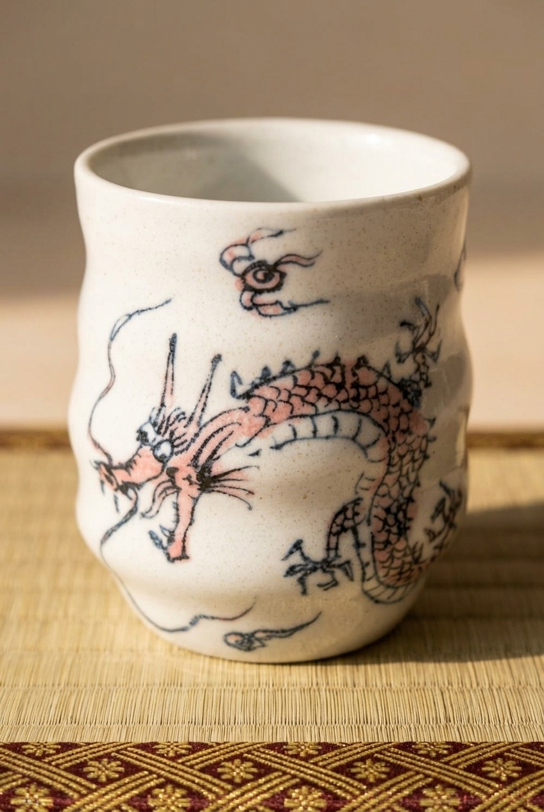

Japanese pottery is covered in animals and symbols, and most listings never explain any of them. This one has a specific, traceable meaning — here's what it is, and whether it's worth putting on your shelf.
See current price on Amazon →As an Amazon Associate, I earn from qualifying purchases.
The dragon (ryu) in Japanese art isn't a decorative flourish invented for export. It descends from Shinto belief in water deities tied to rain, rivers, and the sea — and by extension to prosperity, career success, and protection from misfortune. It's one of the oldest continuously used motifs in Japanese art, appearing on shrines and temples as often as on tableware.
Look closely and the dragon doesn't circle the cup evenly. It's concentrated across roughly two-thirds of the body, coiled from the base up to a small painted cloud near the rim, with the remaining panel left plain white. That's a framing choice, not a flaw — it means there's a correct way to set the cup down, with the dragon facing out.
Gifu's Mino-yaki kilns have been producing ceramics for roughly 1,300 years and account for more than half of all ceramic tableware made in Japan today. That scale doesn't mean generic — it means the region's infrastructure for keeping detailed, hand-painted linework consistent across a production run is well established.
Mino Ware "Dragon" Yunomi, Set of 2 — one cup in pink, one in blue, each hand-painted with a full-body coiled dragon on a matte white glaze. Ceramic, made in Gifu, Japan.
See current price on Amazon →As an Amazon Associate, I earn from qualifying purchases.
This page contains an affiliate link — if you buy through it, it costs you nothing extra and helps support this site.